Abordaremos algumas dicas sobre a linguagem Python.
Você vai compreender para que serve, quando e como utilizá-la.
Pois bem! O objetivo dessas dicas tem como foco assuntos interessantes que poderão levá-lo(a) a uma jornada de conhecimento.
Curioso? Vamos lá?
O que é Python
É uma linguagem de programação versátil, de código aberto (gratuíto), de multiplataforma, de alto nível e muito poderosa, usada para desenvolvimento web, possuindo uma grande comunidade ativa de desenvolvedores e muitas bibliotecas e ferramentas disponíveis para diferentes áreas de aplicação como:
▷ Análise de dado e automação de tarefas;
▷ Machine Learning e Inteligência Artificial;
▷ Aplicações desktop, graças a muitas bibliotecas e frameworks disponíveis.
Projetada para ser fácil de entender, ensinar, escrever, instalar e com uma sintaxe clara e legível.
Muito interessante não é? Quer saber detalhes?
Então continue lendo...
INSTALAÇÃO DO PYTHON
Agora você saberá aonde obter e como instalar o Python.
O método para instalar o Python pode variar dependendo do seu sistema operacional e da versão específica do Python que você deseja instalar, basta escolher o seu Sistema Operacional e fazer download do aplicativo disponível em:
https://www.python.org/downloads/ .
IMPORTANTE: Você deve identificar qual o seu Sistema Operacional em uso(Windows, Linux/Unix, MacOS ou outro), se é 32 ou 64 bits. Escolher e fazendo download da versão compatível com seu sistema. A instalação é intuitiva e de fácil execução.
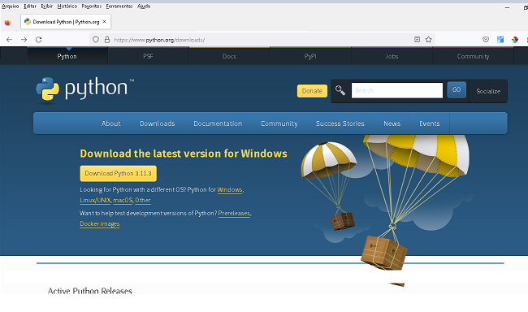
Site de download do Python
"Agora que você já instalou o Python em seu sistema, vamos nos aprofundar ainda mais... vamos lá?"
EDITOR, CONSOLE E DEBUG
Para você usá-lo, basta saber que o Python 3 contém um aplicativo muito simples, mas extremamente útil chamado "IDLE", que é o ambiente integrado de desenvolvimento e aprendizagem que é implementado juntamente com a instalação do Pyhton, podendo ser localizado acessando o Menu Iniciar de eu computador ou pela pesquisa.
Oferece recursos como destaque de sintaxe, preenchimento automático e recuo inteligente.
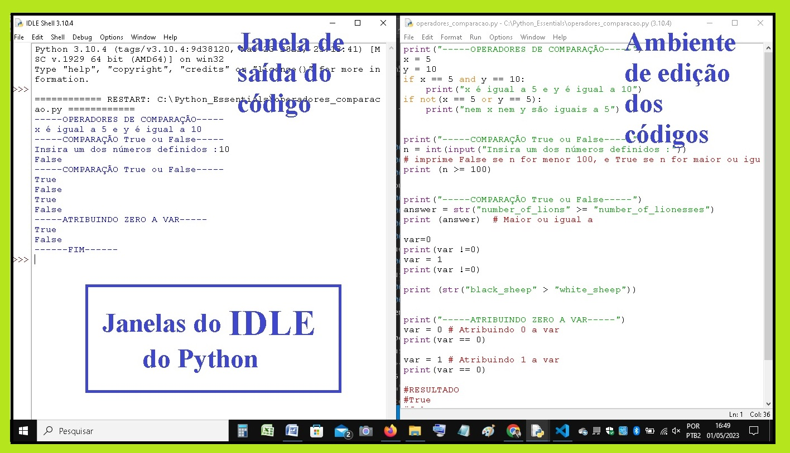
Janelas do IDLE no Python
CONSIDERAÇÕES: Existem também ferramentas on-line aonde podemos utilizar, e que estão disponíveis na web, bastando acessar os links abaixo:
▷ Podemos fazer download e utilizar também o VsCode (Visual Studio Code) para edição,
deverá ser instalado também conforme a compatibilidade com seu sistema:
https://code.visualstudio.com/download
PERSONALIZANDO IDLE PARA DARK MODE
Ao abrir o IDLE, verá que o fundo da tela (background) é branco por padrão, e para torná-lo DARK MODE(escuro), personalizando a cor de fundo de sua tela, vou te orientar como chegar lá e deixar mais agradável o seu IDLE.
Valos lá aprender?
Basta seguir os seguintese passos:
PASSO 1 - Após aberto o IDLE, ir ao menu OPTIONS da janela principal e escolher no menu a opção CONFIGURE IDLE:
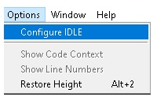
Menu Options do IDLE - Python
PASSO 2 - Feito isso abrirá a janela de configuração. Basta ir em IDLE CLASSIC e escolher a opção IDLE DARK
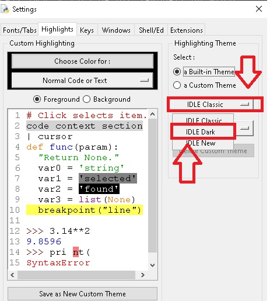
Menu Settings do IDLE
PASSO 3 - Após isso, basta escolher a opção no centro e marcar a opção BACKGROUND (tela de fundo), escolher a opção CHOOSE COLOR FOR, abrirá a paleta de cores conforme exemplo abaixo, aonde deverá selecionar a cor PRETA e basta clicar em OK:
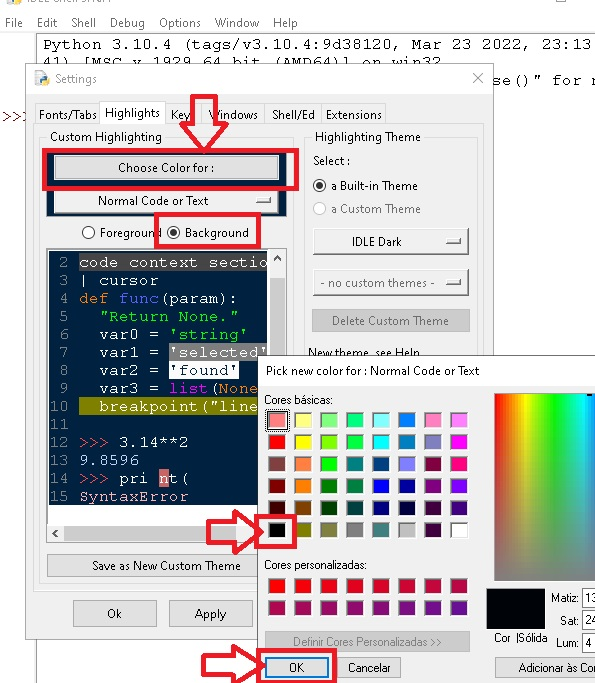
Configuração THEME no IDLE (Paleta)
PASSO 4 - Após, você deve nomear a sua PERSONALIZAÇÃO do THEME (abaixo coloquei o nome de Black Theme). Feito isso, basta você clicar em OK:
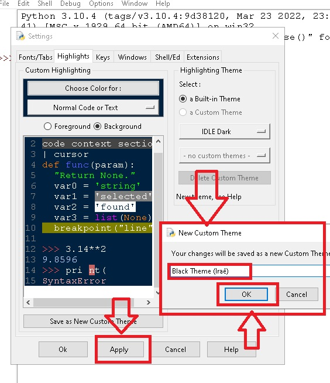
Salvando o tema e aplicando
PASSO 5 - Clicar em APPLY (para aplicar) o tema de cor preta.
Agora o FUNDO do seu IDLE estará BLACK (preto) conforme sua escolha. A cor de fundo (background) pode ser qualquer uma que você escolher, porém, deverá escolher cores que descansem sua vista e seja mais agradável para a realização de suas tarefas de edição de códigos, visto que você passará bastante tempo editando códigos.
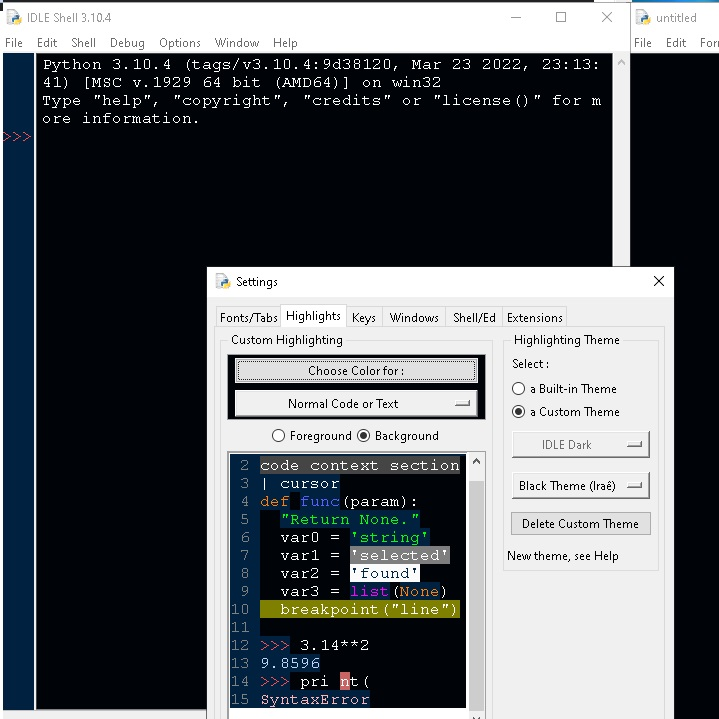
Confirmando o tema aplicado
PASSO 6 - Agora que você concluiu a configuração do seu ambiente, experimente utilizá-lo.
“Desejo BONS ESTUDOS e realize ótimos projetos”.
Sucesso!!!
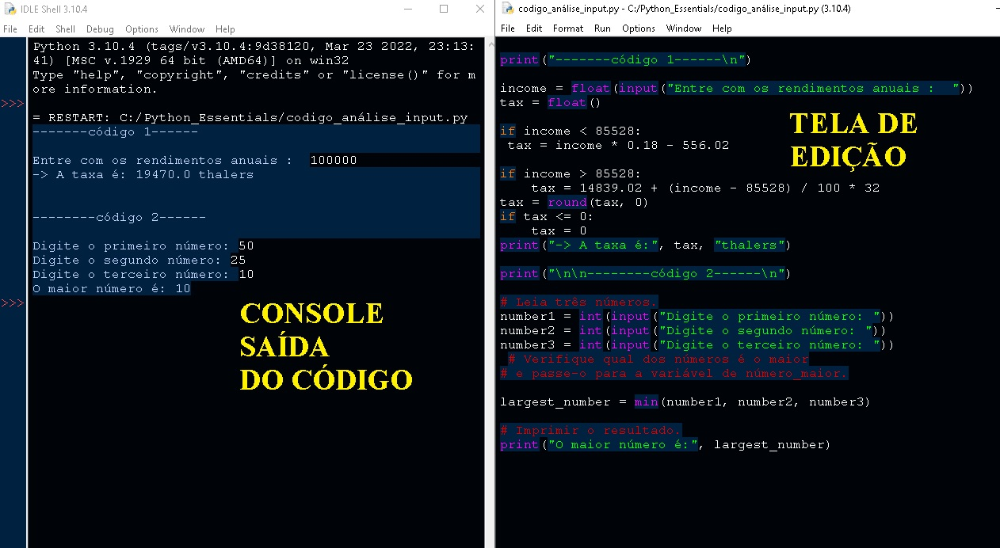
Janela do IDLE do Python em Black Mode
Abaixo a representação de como seria a execução do Python com um quadro de uma análise e sua distribuição.
Interessante não é?
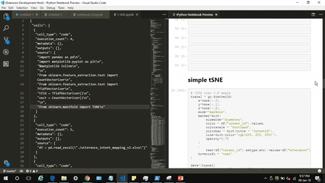
Janela de execução com Python
Agora chegou a hora de aprender a utilização do Python na íntegra.
Vamos entender mais? Vamos lá?
ELEMENTOS DA LINGUAGEM DE PROGRAMAÇÃO
As linguagens de programação têm vários elementos que permitem a criação de algoritmos e programas.
Quer saber como são?
Abaixo listamos os elementos:
✅ Sintaxe: é a forma como as instruções e expressões são escritas na linguagem (estrutura, pontuação e regras);
✅ Semântica: é o significado das instruções e expressões em um programa e como se relacionam com o mundo real e com outras instruções do programa;
✅ Tipos de dados: são as diferentes categorias de dados que podem ser usadas em um programa, como números, texto, booleanos, entre outros;
✅ Variáveis: são os nomes que se atribuem aos valores de dados em um programa, permitindo que eles sejam referenciados e manipulados ao longo da execução do programa;
✅ Estruturas de controle: são as instruções que controlam o fluxo de execução do programa, como condicionais (if-else), loops (for, while) e chamadas de função;
✅ Bibliotecas e frameworks (Lexis): são conjuntos de código pré-existente que podem ser usados em programas para realizar tarefas específicas, como processamento de imagens, manipulação de dados, construção de interfaces gráficas, entre outras.
OBS: Todos esses elementos são combinados de diferentes maneiras em cada linguagem, mas permitem que os programadores expressem soluções de problemas de forma estruturada.
INDENTAÇÃO
No Python, a indentação é usada para indicar o nível de código aninhado, que é representado por uma certa quantidade de espaços ou tabulações no início de uma linha. A convenção padrão é usar quatro espaços para cada nível de indentação, sendo essa obrigatória em Python. Erros de indentação podem levar a problemas na execução do código.
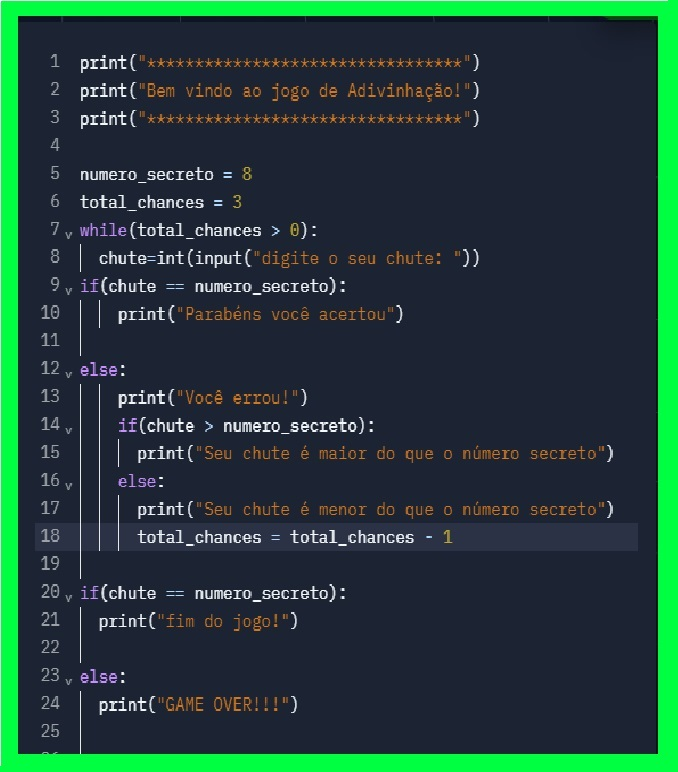
Exemplo de um código indentado
COMPILAÇÃO E INTERPRETAÇÃO
O Python combina os processos de compilação e interpretação, onde o código-fonte é interpretado pelo interpretador e depois compilado em bytecode antes da execução.
O bytecode é uma forma intermediária de código que melhora o desempenho e eficiência do programa, e é armazenado em arquivos . O interpretador verifica o código-fonte linha por linha e exibe uma mensagem de erro, se houver erros de sintaxe.
Existem quatro itens importantes na composição das linguagens de programação:
❶ A ordem alfabética para escrita (com script reconhecível);
❷ O domínio do dicionário léxico da linguagem;
❸ A obediência às regras sintáticas da linguagem;
❹ Coerência semântica do programa (o programa tem de fazer sentido).
APRENDER A USAR O PYTHON?
Função Função print(): em Python é usada para exibir informações na tela. Algumas orientações para o seu uso incluem:
Uso da funçãoFunção print():
✅ O argumento da função print() pode ser uma string ou uma expressão que deve ser convertida em string.
✅ Para imprimir várias informações em uma única linha, separe-as por vírgulas.
✅ O argumento opcional sep é usado para definir o separador entre os valores impressos.
✅ O argumento opcional end é usado para definir o caractere final após a impressão dos valores.
✅ Para formatar a saída, é possível usar as strings de formatação ou o método format().
✅ Para imprimir em arquivos em vez de na tela, é possível redirecionar a saída usando a sintaxe print(..., file=nome_do_arquivo).
Alguns exemplos de uso da função print() em Python:
Imprimir uma string simples:
print("Olá, mundo!")
Imprimir o valor de uma variável:
nome = "César"
print("Bem-vindo, " , nome)
Concatenar várias strings e variáveis:
idade = 30
cidade = "Belo Horizonte"
print("Eu tenho", idade, "anos e moro em" , cidade)
with open("arquivo.txt", "w") as f:
print("Esse texto será impresso no arquivo.", file=f)
Esses são apenas alguns exemplos, a função print() é muito versátil e pode ser usada de diversas maneiras.
IMPLEMENTAÇÕES
As implementações conhecidas são:
CPython. Esta é a implementação original, sendo a versão do Python que mais vem sendo desenvolvida, pois a mesma está escrita com a linguagem.
Existem diversas implementações como: Jython, Cythotn, MicroPython, Python for .Net, IronPython, Pypy e outras.
As funções são úteis para organizar e reutilizar o código, permitindo que um bloco de instruções seja executado várias vezes com diferentes entradas. Elas podem ser chamadas em qualquer parte do programa, tornando o código mais modular e legível.
São elas:
✅ print(): exibe uma mensagem na tela.
✅ input(): solicita a entrada de dados do usuário.
✅ len(): retorna o comprimento de uma sequência, como uma string ou uma lista.
✅ range(): cria uma sequência de números.
✅ open(): abre um arquivo para leitura ou escrita.
✅ append(): adiciona um elemento a uma lista.
✅ split(): divide uma string em substrings com base em um delimitador.
✅ join(): une uma sequência de strings em uma única string usando um separador.
✅ strip(): remove espaços em branco de uma string.
✅ sort(): classifica uma lista em ordem crescente ou decrescente.
Essas são apenas algumas das funções mais comuns em Python e existem muitas outras que podem ser usadas para realizar diferentes tarefas.
Você verá agora algumas das mensagens de erro
mais comuns em Python e quando ocorrem:
❌ SyntaxError: quando o interpretador encontra uma sintaxe inválida em um programa Python.
❌ NameError: quando o interpretador não consegue encontrar o nome de uma variável ou função usada no programa.
❌ TypeError: quando uma operação ou função é aplicada a um tipo de dado incompatível.
❌ IndexError: quando uma lista, tupla ou sequência é acessada com um índice inválido.
❌ ValueError: quando uma função recebe um argumento com valor inválido ou incorreto.
❌ KeyError: quando um dicionário é acessado com uma chave que não existe.
❌ AttributeError: quando um objeto não tem um determinado atributo ou método.
Essas são apenas algumas das mensagens de erro mais comuns, mas há muitas outras possíveis, dependendo do tipo de problema no programa. É importante ler com atenção as mensagens de erro para você identificar o problema e corrigi-lo.
Os sinais aritméticos em Python são utilizados para realizar operações matemáticas.
Eles incluem:
• Adição (+): utilizado para somar dois valores.
• Subtração (-): utilizado para subtrair um valor de outro.
• Multiplicação (*): utilizado para multiplicar dois valores.
• Divisão (/): utilizado para dividir um valor pelo outro.
• Divisão inteira (//): retorna o resultado da divisão sem o resto da divisão.
• Módulo (%): retorna o resto da divisão entre dois valores.
• Exponenciação (**): eleva um valor à potência de outro.
❌Não dividir (% ou /) por zero (0): A divisão por zero não funciona (por zero você nunca deve dividir, ou divisão inteira e ou encontrar resto de divisão por zero)
OUTROS SINAIS UTILIZADOS
Além dos sinais aritméticos, Python possui outros sinais que são utilizados em diversas operações.
Alguns exemplos são:
• Operadores de comparação: utilizados para comparar valores e retornar um valor booleano (True ou False). Exemplos:
> (maior que), == (igual), <= (menor ou igual), >= (maior ou igual), != (diferente).
• Operadores lógicos: utilizados para combinar valores booleanos e retornar um novo valor booleano. Exemplos: and (e), or (ou), not (negação).
• Operadores de atribuição: utilizados para atribuir valores a variáveis. Exemplos: = (atribuição simples), += (atribuição com adição), -= (atribuição com subtração), *= (atribuição com multiplicação), /= (atribuição com divisão), entre outros.
• Operadores de identidade: utilizados para comparar a identidade de objetos (se são o mesmo objeto na memória). Exemplos: is (é), is not (não é).
• Operadores de pertencimento: utilizados para verificar se um valor está contido em uma sequência. Exemplos: in (está em), not in (não está em).
Muito interessante os operadores.
Você quer saber mais? Continue lendo...
O Python possui outros tipos e identificação dos números. Alguns exemplos são:
• Números octais : são representados pelo prefixo "0o" de dígitos de 0 a 7.
• Números hexadecimais : são representados pelo prefixo "0x" de dígitos de 0 a 9 e letras de A a F.
Esses tipos de números são usados para representar valores em sistemas numéricos diferentes do sistema decimal, que é o sistema padrão usado na maioria dos programas de computador. O Python permite a conversão de números entre diferentes sistemas numéricos usando funções embutidas, como oct() e hex().
COMENTÁRIOS
Comentários em Python são utilizados para explicar o código ou desabilitar uma linha de código temporariamente. Eles são indicados pelos caracteres e são ignorados pelo interpretador do Python:
• # (hashtag ou cerquilha) Iniciando o comentários de uma única e podem ser adicionados no final de uma linha de código ou em uma linha separada.
#coding: utf-8
#tudo que estiver a frente da cerquilha será ignorado
print(teste) #a instrução atrás da cerquilha será interpretada
• Já são iniciados e finalizados com " "" " (três aspas duplas) ou
''' ''' ( três aspas simples) para os comentários de várias linhas.
#coding: utf-8
"""
toda informações contida entre 3 aspas DUPLAS
é considerada como caracteres que devem ser ignorados.
"""
''' toda informações contida entre 3 aspas SIMPLES
é considerado texto que deve ser ignorado.
'''
Em Python, as literais que são comumente usados: inteiros, booleanos e strings. A seguir listamos as literais:
• Literais de Inteiros: são números inteiros positivos ou negativos, sem decimais. São representados sem nenhuma pontuação ou símbolos (Exemplos: 5, -10, 0 e 100).
• Literais de Ponto flutuante (ou simplesmente float): que contêm (ou são capazes de conter) a parte fracionária (Exemplos: 3.14, 6.02e23 representa o número 6,02 x 10^23).
• Literais de Booleanos: representam valores lógicos verdadeiro (True) ou falso (False). São frequentemente usados em condicionais e loops.
Exemplo de boleano:
x = 5
y = 10
if x == 5 and y == 10:
print("x é igual a 5 e y é igual a 10")
if not(x == 5 or y == 5):
print("nem x nem y são iguais a 5")
• Literais de Strings: são sequências de caracteres que representam texto. Podem ser escritas entre aspas simples ou duplas, como por exemplo: "Olá, mundo!", 'Python é incrível', "1234".
• Literais de Sequência: são sequências de caracteres que podem ser utilizadas para representar dados de texto ou binários em Python, e elas são definidas entre aspas simples (exemplo: texto = "Olá, mundo!"), aspas duplas ou aspas triplas, tuplas e listas. Exemplos: tupla = (1, 2, 3) e lista = [4, 5, 6].
Exemplo de lista:
criando uma lista de frutas
#posições dos elementos/indice na lista: 0 , 1 , 2, 3
frutas = ['maçã', 'banana', 'laranja', 'uva']
# acessando um elemento pelo índice
print(frutas[1]) # saída: 'banana'
# alterando um elemento laranja por abacaxi posição 2
frutas[2] = 'abacaxi'
# adicionando um elemento morango no final da lista
frutas.append('morango')
# removendo um elemento pelo índice na posição 0 maçã
del frutas[0]
# imprimindo a lista atualizada
print(frutas) # saída: ['banana', 'abacaxi', 'uva', 'morango']
• Literais de complexos: representam números complexos, que possuem uma parte real e uma parte imaginária Exemplos: 3+4j (representa o número complexo 3 + 4i).
• Literal None: indicar que uma variável ou objeto não tem valor atribuído ou que uma função não retornou nenhum valor.
Esses tipos de literais são usados em todo o código Python para armazenar e processar informações.
USO DO END E DO SEP
O end e o sep são parâmetros opcionais da função print() em Python. Eles permitem personalizar a maneira como a saída do programa é formatada. Veja como:
• O parâmetro end
define o que será adicionado ao final da impressão da linha atual. Por padrão, o end é uma nova linha (\n), o que significa que a cada chamada do print(), o cursor será movido para a próxima linha. É possível substituir o valor padrão do end por qualquer outra string, incluindo um espaço vazio, uma quebra de linha, um caractere especial ou qualquer outra coisa.
• O parâmetro sep
define o separador entre os argumentos do print(). Por padrão, o sep é um espaço em branco, mas pode ser personalizado para qualquer outra string. Isso é especialmente útil quando se quer imprimir múltiplos valores, por exemplo, para criar uma tabela ou imprimir dados em colunas.
Ambos os parâmetros são usados em conjunto com a função print(). Por exemplo, o seguinte código imprime uma lista de números em uma única linha, separados por vírgulas e sem espaço entre eles:
numbers = [1, 2, 3, 4, 5]
print(*numbers, sep= ' , ' , end= ' ' )
O * (Asterisco) antes do nome da lista desempacota os valores da lista, permitindo que sejam passados como argumentos separados para a função print().
O sep= ' , ' define a vírgula como separador e end= ' ' remove a nova linha padrão do final da impressão. O resultado será: 1,2,3,4,5 .
USO DE ASPAS
No caso de ser preciso usar uma aspas simples dentro de um texto de aspas simples basta usar \ ' e para usar aspas duplas dentro de aspas duplas você utilizaria \ " , aspas triplas ' ' ' ou " " " que tem a mesma função praticamente.
Observe os exemplos:
print('''string
em de mais
de uma linha''')
print('Sinal de aspas simples: \ ' ')
print("Sinal de aspas dupla: \ " ")
print(" " "Sinal de aspas simples e dupla: " ' " " ")
print('''Sinal de aspas simples e dupla: " ' ''')
Agora que chegou até aqui, você irá se aprofundar ainda mais nos Operadores Aritméticos.
Nos primeiros anos de estudo aprendemos a fazer continhas de soma, subtração, multiplicação e divisão.
Em algoritmos eles também são simples e têm a mesma simbologia em todas as linguagens de programação.
Você vai entender ainda mais? Vamos lá!!!
OPERADORES
Aritméticos e Lógicos em Python
Atualizado em:
Olá Desenvolvedor Python!
Agora você irá conhecer os Operadores em Python:
Operadores Lógicos, Operadores Aritméticos, Operadores de Associação,
Operadores de Comparação, Operadores de Identidade e Operadores de
Atribuição!
Parecem ser muitos Operadores!
Se você já programa em Python, já se deparou com esses operadores em algum momento:
is, is not, ==, in, not in, and, or, %=.
Bem, agora vamos ao que interessa: você vai dominar TODOS esses Operadores e aprender como utilizá-los em seus programas Python!
Está pronto, então vamos aprender sobre Operadores!
Vá Direto ao Assunto…
Curioso?
Clique em qualquer um dos links abaixo e irá direito ao assunto!!! Vamos lá?
Os Operadores em Python possibilitam que o desenvolvedor consiga transcrever a lógica para código.
Python disponibiliza uma série desses operadores para os
desenvolvedores e é muito importante dominá-los se você quiser se tornar
um verdadeiro Pythonista!
Veremos todos em detalhes agora, começando pelos Operadores Aritméticos!
2- OPERADORES ARITIMÉTICOS
Esses operadores são utilizados para criarmos expressões matemáticas comuns, como soma, subtração, multiplicação e divisão.
Veja quais estão disponíveis no Python:
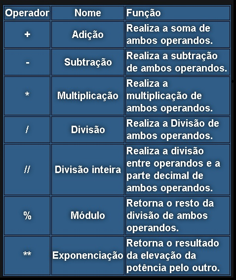
Veja agora a utilização de cada operador aritmético mencionado acima:
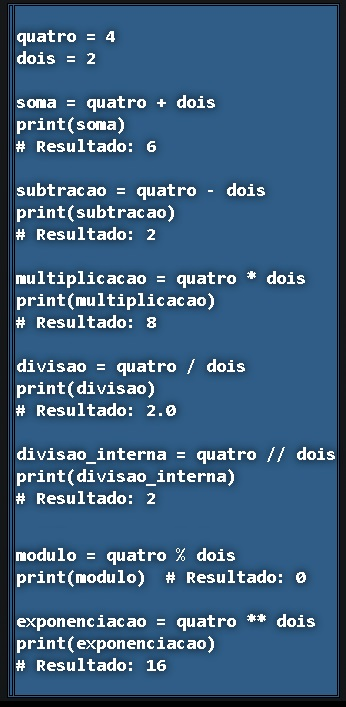
3- OPERADORES DE COMPARAÇÃO
Como o nome já diz, esses Operadores são usados para comparar dois valores:
Operador
Nome
Função
==
Igual a
Verifica se um valor é igual ao outro
!=
Diferente de
Verifica se um valor é diferente ao outro
>
Maior que
Verifica se um valor é maior que outro
>=
Maior ou igual
Verifica se um valor é maior ou igual ao outro
<
Menor que
Verifica se um valor é menor que outro
<=
Menor ou igual
Verifica se um valor é menor ou igual ao outro
Vamos ver exemplos da utilização de cada operador de comparação mencionado acima.
Para facilitar o entendimento, todas as operações estão retornando um valor igual a True, para que você entenda como cada condição é aceita:
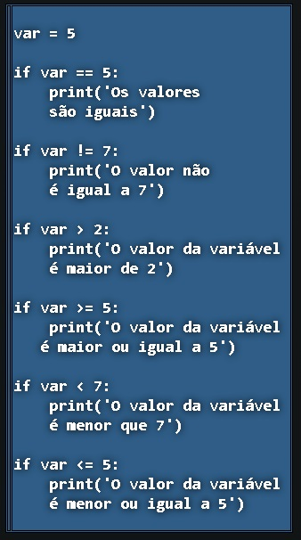
Resultado do código acima:
Os valores são iguais
O valor não é igual a 5
O valor da variável é maior de 5
O valor da variável é maior ou igual a 5
O valor da variável é menor que 7
O valor da variável é menor ou igual a 5
4- OPERADORES DE ATRIBUIÇÃO
Esse Operadores são utilizados no momento da atribuição de valores à variáveis e controlam como a atribuição será realizada.
Veja quais Operadores de Atribuição estão disponíveis em Python:
Operador
Equivalente a
=
x = 1
+=
x = x + 1
-=
x = x - 1
*=
x = x * 1
/=
x = x / 1
%=
x = x % 1
Exemplo da utilização de cada operador de atribuição mencionado acima:
Obs: O operador % é
chamado módulo e nada mais é que o resto da divisão. No exemplo acima: 5
dividido por 2 dá 2 de resultado e sobra 1. Por isso numero %= 2 será 1!
5- OPERADORES LÓGICOS
Esses Operadores nos possibilitam construir um tipo de teste muito útil e muito utilizado em qualquer programa Python: os testes lógicos.
Python nos disponibiliza três tipos de Operadores Lógicos: o and, o or e o not.
Vamos ver mais sobre eles agora!
Operador
Definição
and
Retorna True se ambas as afirmações forem verdadeiras
or
Retorna True se uma das afirmações for verdadeira
not
retorna Falso se o resultado for verdadeiro
Exemplo da utilização de cada um:
num1 = 7
num2 = 4
# Exemplo and
if num1 > 3 and num2 < 8:
print("As Duas condições são verdadeiras")
# Exemplo or
if num1 > 4 or num2 <= 8:
print("Uma ou duas das condições são verdadeiras")
# Exemplo not
if not (num1 < 30 and num2 < 8):
print('Inverte o resultado da condição entre os parânteses')
6- OPERADORES DE IDENTIDADE
Estes Operadores são utilizados para comparar objetos, verificando se os objetos testados referenciam o mesmo objeto (is) ou não
(is not).
Operador
Definição
is
Retorna True se ambas as variáveis são o mesmo objeto
is not
Retorna True se ambas as variáveis não forem o mesmo objeto
Agora vamos aos exemplos de como utilizar cada operador de identidade mencionado acima:
Exemplo do operador is:
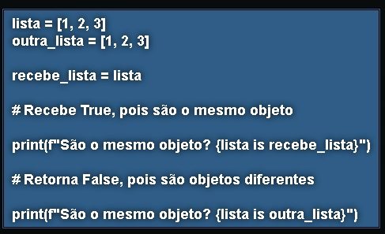
Resultado do código acima:
São o mesmo objeto? True
São o mesmo objeto? False
Exemplo do operador is not:
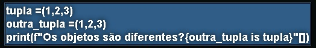
Resultado do código acima:
Os objetos são diferentes? True
Muitas vezes, programadores Python ficam na dúvida em quando utilizar o operador de igualdade == ou o operador de identidade is.
Mas agora que você já conhece os dois sabe que o operador == verifica os valores testados, enquanto o operador is testa a referência dos valores testados!
7- OPERADORES DE ASSOCIAÇÃO
Por último, temos os Operadores de Associação.
Eles servem para verificar se determinado objeto está associado ou pertence a determinada estrutura de dados.
Operador
Função
in
Retorna True caso o valor seja encontrado na sequência
not in
Retorna True caso o valor não seja encontrado na sequência
Exemplo da utilização de cada operador de associação mencionado acima:
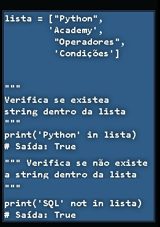
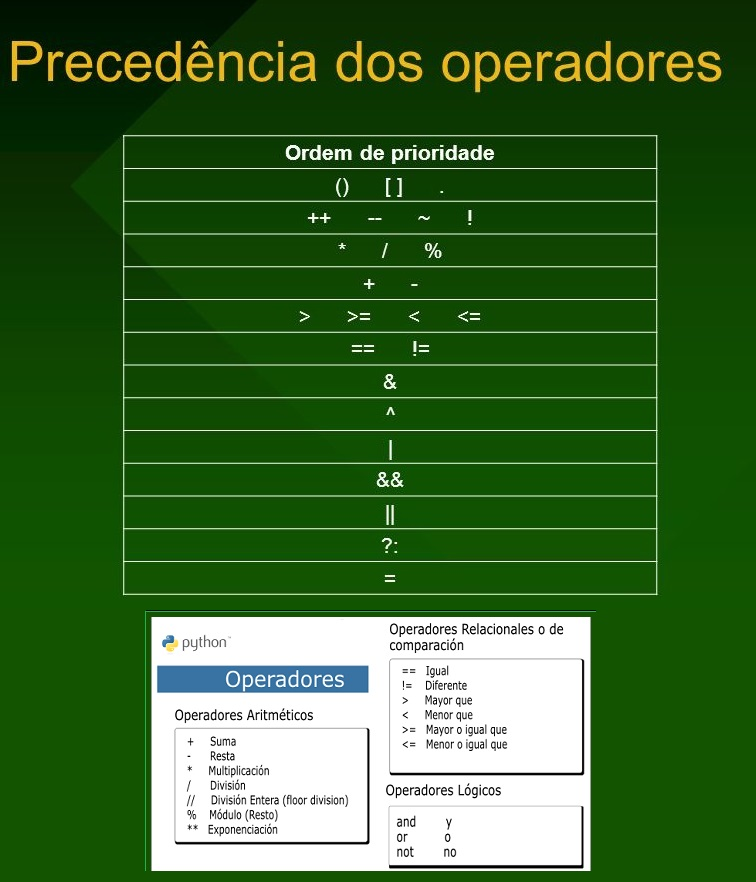
Tabela de Prioridades
CONCLUSÃO
Se você chegou até aqui, é sinal que está determinado a aprender a Linguagem Python.
Fico muito contente com isso!
Agora que você aprendeu diversos tipos de Operadores que se encontram disponibilizados em Python, para que você possa desenvolver os scripts na Linguagem!
Você deu um passo importante para conhecer a fundo da linguagem Python!
Parabéns!!! Continue sempre assim!
CONSIDERAÇÕES
Serão passados mais materiais uteis para você aprender ainda mais. O material aqui transcrito não foi gerado para fins comerciais, não possuindo finalidade de lucro. Sua elaboração é destinado somente para fins de aprendizado e estudo, em forma de colaboração, servindo como orientação adicional para cursos.
Python - Máquina de Vetores de Suporte — SVM
"Agora que você está mais capacitado com essas dicas,
você se organizou e ja sabe qual direção tomar, já pode ir se exercitando. Utilize a pesquisa na Web a seu favor. Conseguirá encontrar muito material de grande utilidade !!!"